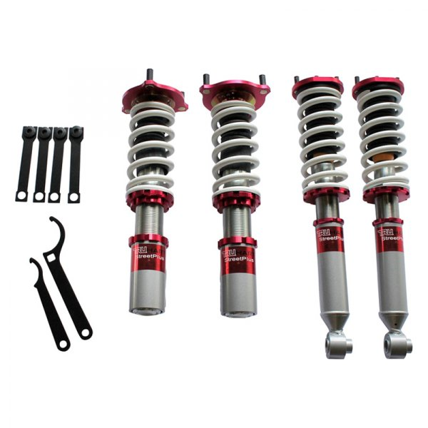
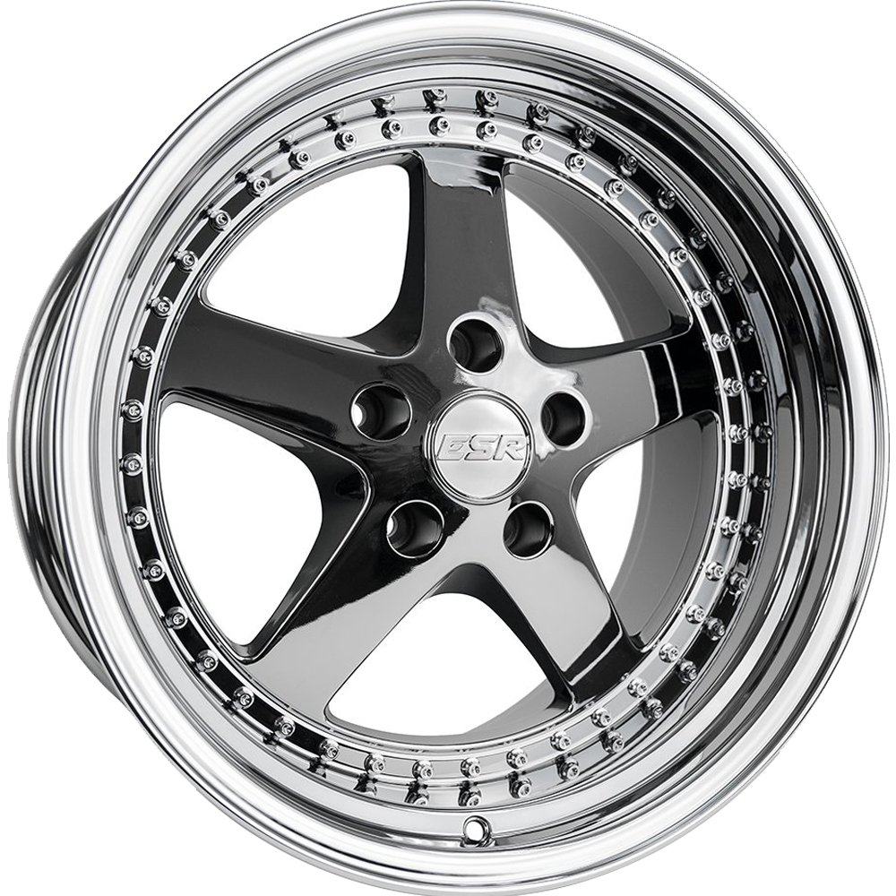
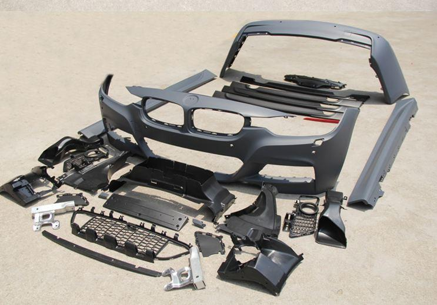
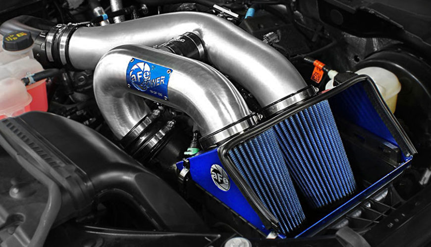

Mod Ideas
 Supension components such as springs, coilovers, or airbags can definitely
give your Honda or Acura a lower profile, than stock suspension. When it comes to suspension components, it's never a good idea to
cheap out on such an important component. Depending on the look you want to achieve, you can easily find budget friendly coilovers
that offer a smooth ride.
 Many car enthusiast have been arguing back and forth, about replica wheels vs real wheels.
Many car owner's outside the Honda family own replicia wheels, because of their affordability. But other car enthusiast dislike replicia wheels
because there copycats of the real deal and there less attractive. When it comes wheels, there not much to be said. Whether your willing
drop two grand on real wheels or less than an grand on replicia wheels, this component will help spruce up your ride.
 If your ever intrested in changing up the look of your stock car, you can always add
an aftermarket body kit to your Honda or Acura. Whether it's an aftermarket bumper or lip, there's many different styles of body kits
to choose from.
 Under the hood also demands some TLC. There are many compontents under the hood
you can upgrade to make your Honda or Acura faster or louder. For budget-friendly pockets intake's,exhaust's,K-Pro's, and turbo can help
add more power to the gas pedal.